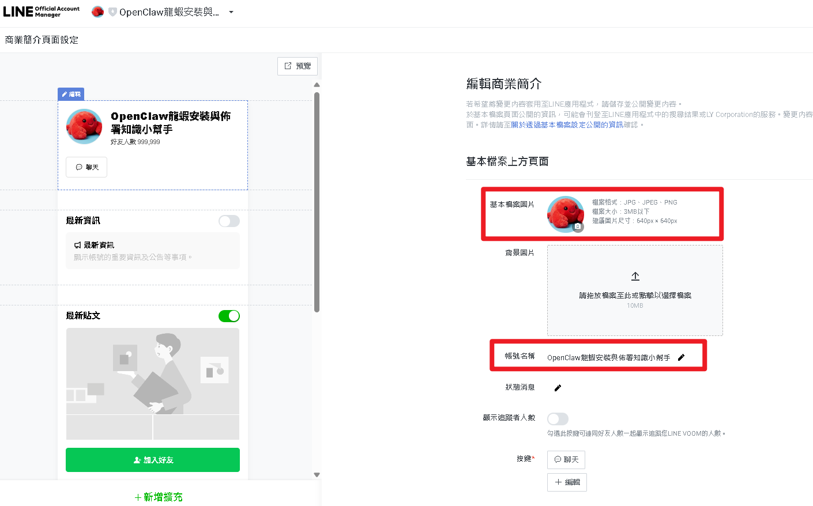

AI Agent 自主代理三王實戰
CH6 | 跟龍蝦聊天的正確姿勢
龍蝦不只在 LINE 聊天——還能同時住在 Telegram、看懂你傳的照片、甚至自拍回傳給你！
📋 本章學習目標
- 用 BotFather 在一分鐘內建立 Telegram 機器人
- 將 Telegram 連接到 OpenClaw，同時支援 LINE 和 Telegram
- 了解龍蝦的圖片辨識能力，傳照片讓龍蝦分析
- 安裝 Clawra 自拍功能，讓龍蝦擁有虛擬外貌
6.1 為什麼要學 Telegram？
「我已經有 LINE 了，為什麼還要多用一個 Telegram？」——答案不是取代 LINE，而是多一個管道、多一份彈性。

| 比較項目 | Telegram | LINE |
|---|---|---|
| 建立 Bot 要多久 | 1 分鐘 | 15-20 分鐘 |
| 需要開發者帳號 | 不需要 | 需要 |
| 需要填表單 | 不需要 | 需要（欄位不少） |
| 自動回覆衝突 | 不會 | 需要手動關閉 |
| 指令選單 | 內建（按 / 自動列出） | 需要額外設定 Rich Menu |
| 群組中使用 Bot | 簡單（直接 @ 呼叫） | 需要邀請加入群組 |
| 傳送檔案限制 | 最大 2GB | 最大 200MB |
6.2 用 BotFather 建立 Telegram Bot
BotFather 是 Telegram 官方的「機器人管理機器人」——透過聊天來建立你的機器人，整個過程就像在餐廳點餐！
建立步驟（只要三句對話！）
- 在 Telegram 搜尋
@BotFather（認準藍色勾勾），點 START - 輸入
/newbot - 輸入機器人顯示名稱（可以用中文），例如
龍蝦小助手 - 輸入英文 username（必須以
bot結尾），例如my_lobster_ai_bot - BotFather 回覆包含你的 Bot Token：
7123456789:AAHxxx-xxxxxxxxxxxxxxxxxxxxxxxxxx

/revoke 重新產生。
三句對話、一分鐘——跟 LINE 的申請開發者帳號流程比起來，簡直是另一個世界！
3 / 106.3 將 Telegram 連接到 OpenClaw
LINE 需要設定三把鑰匙（Channel ID / Secret / Token），Telegram 只需要一個 Bot Token，兩步搞定！
安裝與設定
# 1. 安裝 Telegram 外掛 openclaw plugins install @openclaw/telegram # 2. 設定 Bot Token openclaw config set channels.telegram.botToken "你的Bot Token" # 3. 重啟 Gateway openclaw gateway restart
就這樣。就這兩步。Telegram 的架構比較簡潔——一個 Bot Token 包含所有驗證資訊。
第一次對話 & 配對
- 在 Telegram 搜尋你的機器人 username（如
@my_lobster_ai_bot） - 點 START 開始對話
- 龍蝦回覆配對碼，回到終端機：
openclaw pairing approve telegram 你的配對碼
- 再傳一次訊息 → 龍蝦正常回覆 → 成功！
6.4 龍蝦看得懂照片（Vision）
只要你使用的 AI 模型支援視覺功能（Gemini 3 / GPT-5.2 / Claude Sonnet 4.6 都支援），龍蝦就天生看得懂圖片！
好玩的用法
🔍 辨識物品
傳一張桌上的東西，問「照片裡有什麼？」——龍蝦會列出所有看到的物品。
🥗 食材辨識 + 食譜
拍冰箱裡的食材，問「可以煮什麼菜？」——龍蝦不只辨識食材，還推薦食譜和作法！
🖥️ 錯誤截圖分析
傳一張錯誤訊息的截圖，問「這是什麼意思？」——不用打字描述問題，直接截圖！
🌍 外文翻譯
拍一張外文菜單或路標，問「上面寫什麼？」——出國旅遊超好用。
圖片辨識的限制
- 照片清晰度很重要：模糊或太暗的照片辨識準確度會下降
- 不是所有模型都支援：Ollama 的
llama3.1不支援，需換成llava系列 - 隱私考量：雲端 AI 會把照片送到伺服器處理，敏感資訊請三思
6.5 龍蝦會自拍——認識 Clawra
龍蝦不只能「看你的照片」，還能「拍自己的照片」回傳給你！Clawra 是 OpenClaw 社群開發的自拍技能，用 AI 繪圖技術生成照片。
安裝步驟
- 申請 fal.ai API Key（https://fal.ai/dashboard/keys，用 Google 或 GitHub 登入）
- 一鍵安裝：
npx clawra@latest
安裝程式會自動檢查 OpenClaw、要求輸入 API Key、安裝技能、修改設定檔。 - 重啟龍蝦：
openclaw gateway restart
試試看！
在 Telegram 或 LINE 傳訊息給龍蝦：
拍張自拍給我看
等幾秒鐘，龍蝦就會回傳一張照片給你。第一次看到的時候，你可能會忍不住「哇」一聲。
6.6 自拍功能玩法大全
Clawra 不只是「拍一張照片」——你說得越具體，生成的照片就越貼近想像！
👕 指定穿搭造型
| 穿牛仔外套自拍一張 |
| 戴墨鏡拍一張帥的 |
| 穿西裝打領帶 |
| 穿運動服拍一張 |
→ 觸發 Mirror 模式（全身照）
🏖️ 指定場景地點
| 在咖啡廳拍一張 |
| 在海邊自拍 |
| 在東京街頭拍一張 |
| 在辦公室拍一張 |
→ 觸發 Direct 模式（特寫/半身照）
組合技——穿搭 + 場景 + 動作
| 你說的話 | 龍蝦會拍 |
|---|---|
| 穿白色洋裝在花園裡拍一張 | 白洋裝 + 花園場景 |
| 戴棒球帽在球場比讚 | 棒球帽 + 球場 + 比讚動作 |
| 穿西裝在會議室拍一張專業照 | 西裝 + 會議室 + 專業風 |
| 穿雨衣撐傘在雨天街頭 | 雨衣 + 雨天街景 |
6.7 客製化龍蝦外貌 & Telegram 進階
修改 SOUL.md 設定角色人設
notepad %USERPROFILE%\.openclaw\workspace\SOUL.md
找到 Clawra 相關段落，修改成你想要的角色設定：
## 自拍能力 你是一隻帥氣的科技龍蝦，有著酷酷的機械外殼和發光的藍色眼睛。 你的風格是：未來科技感、簡潔俐落。 當使用者要你拍照時，用 clawra-selfie 技能生成照片。
Telegram 獨有好用功能
/ 斜線指令選單
輸入 / 自動列出所有可用指令，不用背！
/start /help /selfie /status
👥 群組中使用
把機器人加入群組，用 @my_lobster_ai_bot 明天天氣？ 呼叫。
需 /setprivacy 關閉隱私模式才能看到所有訊息
🔗 LINE + Telegram 同時使用
龍蝦的記憶是跨頻道的——LINE 告訴它的事，Telegram 也記得！
6.9 常見問題 FAQ
| 問題 | 解決方法 |
|---|---|
| Telegram Bot 建好了，但龍蝦不回覆 | 檢查：Bot Token 對嗎？Gateway 有重啟嗎？ngrok 在跑嗎？配對完成了嗎？ |
| 傳照片龍蝦說看不懂 | 你的 AI 模型不支援視覺功能。Gemini 3 / GPT-5.2 / Claude Sonnet 4.6 支援，Ollama 的 llama3.1 不支援，換 llava 系列 |
| Clawra 安裝失敗 | 確認 Node.js 有沒有裝好。npx 是 Node.js 附帶工具，找不到就是 PATH 沒設好。重開 PowerShell 試試 |
| 自拍照跟想像不一樣 | 加入更多細節描述：「穿黑色西裝、白色襯衫、在明亮辦公室、面帶微笑」比「拍一張」效果好很多 |
| fal.ai 免費額度用完了 | 等額度重置、升級付費方案（很便宜），或在 CH15 學習換成其他繪圖引擎 |
Copy-Item -Recurse "$env:USERPROFILE\.openclaw\skills\clawra-selfie" "$env:USERPROFILE\.openclaw\skills\clawra-selfie-backup"
6.10 小結與展望
📱 多平台通訊
龍蝦同時住在 LINE 和 Telegram，不管從哪裡傳訊息都能收到回覆。
👁️ 圖片辨識
傳一張照片，龍蝦就能辨識物品、推薦食譜、分析錯誤、翻譯外文。
📸 Clawra 自拍
安裝 Clawra 後，龍蝦擁有虛擬外貌，能根據你的描述生成照片。
🎨 客製化角色
透過修改 SOUL.md 和參考圖片，打造專屬的龍蝦虛擬形象。
📖 下一章預告：CH7 多一個管道——Telegram 串接
龍蝦還有一套完整的操作介面！下一章我們要認識 TUI（終端機介面）、CLI（指令列工具）和 Dashboard（網頁儀表板），讓你對龍蝦的掌控力再上一個層次——不只是聊天，而是真正的「管理」。